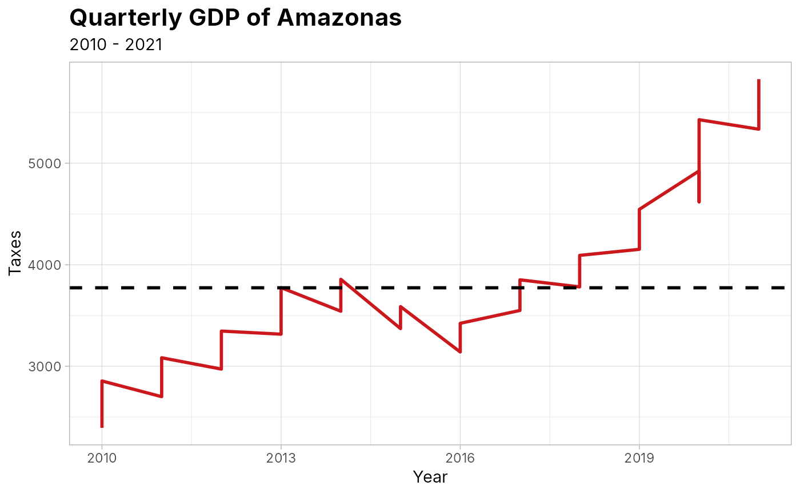

gdp_amazonas - Gross Domestic Product - GDP of Amazonas
gdp_amazonas.RdThis database contains information about the Gross Domestic Product (GDP) of the state of Amazonas over the years (from 2010 to 2021). It includes values in R$ 1,000,000.
Format
`gdp_amazonas' A data frame with 48 rows and 21 columns:
- year
Indicates the year in which the GDP info was collected
- quarter
Specifies the quarter of the year
- agriculture
Refers to the economic output from agricultural activities, including cultivation, harvesting, and logistical support after harvest
- livestock
Represents the economic contribution from livestock farming, covering meat, dairy production, and related support services
- forest_fishing_prod
Outputs from forestry (timber and non-timber products), fishing activities and aquaculture (fish farming)
- extractive_ind
Extractive industries of natural resources as minearls and oil
- manufacturing_ind
Refers to the transformation of raw materials into finished goods industries
- basic_infrastructure
Encompasses services related to electricity and gas generation, water supply, sewage treatment, and waste management.
- construction
Represents economic activities related to building construction.
- vehicle_retail_repair
Includes all commercial activities related to selling goods and services as well as vehicle repair services.
- transport_storage_post
Covers services related to transporting people and goods, storage facilities, and postal services.
- accomodation_food
Refers to economic activities in tourism-related sectors such as hotels and restaurants.
- information_communication
Encompasses sectors dealing with information technology and telecommunications.
- financial_activities
Includes banks, financial institutions, insurance companies, and various financial services.
- real_state_activities
Refers to transactions involving buying, selling, or renting properties.
- professional_activities
Covers a wide range of specialized professional services including consulting and administrative support.
- public_admin_defense_health_edu
Represents public sector spending on government administration, national defense, public education, health care services, and social security programs.
- private_edu_health
Refers to educational institutions and health care providers operating in the private sector.
- art_culture_sport
Encompasses activities related to entertainment, cultural events, sports facilities, and other service-oriented sectors.
- domestic_services
Includes personal services provided within households such as cleaning or caregiving.
- taxes
Represents taxes levied on goods and services included in GDP calculations.
Source
Scientific Journal of Applied Social and Clinical Science - TIME SERIES ANALYSIS FOR THE QUARTERLY GROSS DOMESTIC PRODUCT OF AMAZONAS
Examples
# \donttest{
# Time series - Gross Domestic Product of Amazonas
# Loading dplyr and ggplot2
require(dplyr)
require(ggplot2)
# Selecting only year and taxes and ploting
gdp_amazonas %>%
select(year, taxes) %>%
ggplot(., aes(x = year, y = taxes)) +
geom_line(linewidth = 1L, colour = "#cb181d") +
geom_hline(
yintercept = mean(gdp_amazonas$taxes),
linetype = "dashed",
size = 1
) +
theme_light() +
theme(
plot.title = element_text(face = "bold", size = 16)
) +
labs(
x = "Year",
y = "Taxes",
title = "Quarterly GDP of Amazonas",
subtitle = "2010 - 2021"
)
#> Warning: Using `size` aesthetic for lines was deprecated in ggplot2 3.4.0.
#> ℹ Please use `linewidth` instead.

# }